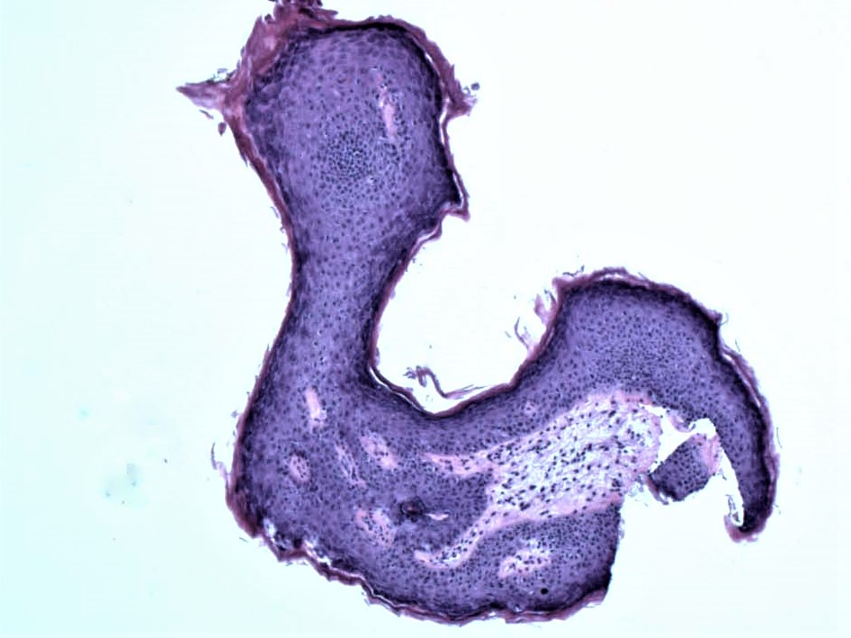

Specimen Context
Review the PathArt collection in context with specimen architecture.
PathArt Gallery
Explore curated pathology images that educate, inspire, and highlight the beauty of microscopic detail.

Featured
A representative microscopic specimen highlighting tissue architecture and staining pattern.
Collection
Filter by category, stain, or magnification, or search across the PathArt collection.
Case study
Select a gallery image to review metadata, alternate views, and educational context.
Educational notes for the selected case appear here.
Learning focus
Education
PathArt supports visual learning through specimen architecture, staining patterns, and pattern recognition.
Review the PathArt collection in context with specimen architecture.
Compare staining context and tissue distribution across related images.
Identify repeating visual structures and tissue patterns under the microscope.
Use these images as visual references for continued study and teaching.
These notes are intended for educational purposes and to support visual learning in pathology.
PathArt
We welcome submissions and inquiries from our physician partners.
Contact Our Laboratory